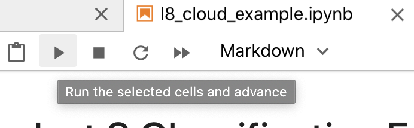

Package delta
DELTA (Deep Earth Learning, Tools, and Analysis) is a framework for deep learning on satellite imagery, based on Tensorflow. DELTA classifies large satellite images with neural networks, automatically handling tiling large imagery.

DELTA is under active development by the NASA Ames Intelligent Robotics Group through the end of 2021. Initially, it is mapping floods for disaster response, in collaboration with the U.S. Geological Survey, National Geospatial Intelligence Agency, National Center for Supercomputing Applications, and University of Alabama.
Installation
-
Install python3, GDAL, and the GDAL python bindings. For Ubuntu Linux, you can run
scripts/setup.shfrom the DELTA repository to install these dependencies. -
Install Tensorflow following the instructions. For GPU support in DELTA (highly recommended) follow the directions in the GPU guide.
-
Checkout the delta repository and install with pip:
bash git clone <http://github.com/nasa/delta> python3 -m pip install delta
DELTA is now installed and ready to use!
Alternate install using a Conda environment
-
Install Miniconda.
-
Checkout the delta repository and cd into the directory:
git clone <http://github.com/nasa/delta> cd ./delta -
Run the following commands to create a conda environment, install dependences, and install delta:
bash conda create --name delta --yes python gdal conda activate delta pip install . # This command should be run in the ./delta directory we made in step 2 - For GPU support in DELTA you'll need to install the required NVIDIA software before running the conda commands in step 3.
Installing ESA SNAP
In order to process Sentinel-1 images you will need to instal the ESA SNAP tool.
You can download it here:
https://step.esa.int/main/download/snap-download/
Once it is installed, you will need to add SNAP's bin folder to your path like this:
export PATH=$PATH:/where/you/installed/snap/bin
Documentation
- README Docs
- DELTA Config README - details on how to configure DELTA from the command line using .yaml files.
- DELTA built-in networks README - details some of the available network architecture .yaml files already included with DELTA.
- Python Documentation - DELTA can be used either as a command line tool or as a python library. You can view the documentation at the linked URL or generate the documentation with
scripts/docs.sh. delta.config.extensionsdocumentation - details on extending DELTA for use with custom layers, image types, preprocessing, etc.
Example
Bash Script Example (Linux Only)
As a simple example, consider training a neural network to map clouds with Landsat-8 images.
The script scripts/example/l8_cloud.sh trains such a network using DELTA from the
USGS SPARCS dataset,
and shows how DELTA can be used. The steps involved in this, and other, classification processes are:
-
Collect training data. The SPARCS dataset contains Landsat-8 imagery with and without clouds.
-
Label training data. The SPARCS labels classify each pixel according to cloud, land, water and other classes.
-
Train the neural network. The script
scripts/example/l8_cloud.shinvokes the commanddelta train --config l8_cloud.yaml l8_clouds.h5where
scripts/example/l8_cloud.yamlis a configuration file specifying the labeled training data and training parameters (learn more about configuration files below). A neural network filel8_clouds.h5is output. -
Classify with the trained network. The script runs
delta classify --config l8_cloud.yaml --image-dir ./validate --overlap 32 l8_clouds.h5to classify the images in the
validatefolder using the networkl8_clouds.h5learned previously. The overlap tiles to ignore border regions when possible to make a more aesthetically pleasing classified image. The command outputs a predicted image and confusion matrix.
The results could be improved— with more training, more data, an improved network, or more— but this example shows the basic usage of DETLA.
JupyterLab Example (Linux/Mac)
The jupyter lab example is very similar to the bash script example above but has a more visual demonstration of the steps and imagery used. It is especially helpful if you are less experienced with the command line.
You can view a read-only version at the above link. Or if you'd like to run the example yourself you'll need to install JupyterLab. To do that you can simply run
pip install jupyterlab
after installing DELTA using the above instructions. Then run
jupyter-lab path_to_delta_install/scripts/example/l8_cloud_example.ipynb
Once jupyter loads, you can advance through the cells one by one using the "play" button

or run all the cells at once using the "fast-foward" button.

Configuration and Extensions
DELTA provides many options for customizing data inputs and training. All options are configured via
YAML files. Some options can be overwritten with command line options (use
delta --help to see which). See the delta.config README to learn about available configuration
options.
DELTA can be extended to support custom neural network layers, image types, preprocessing operations, metrics, losses,
and training callbacks. Learn about DELTA extensions in the delta.config.extensions documentation.
Data Management
DELTA integrates with MLFlow to track training. MLFlow options can be specified in the corresponding area of the configuration file. By default, training and validation metrics are logged, along with all configuration parameters. The most recent neural network is saved to a file when the training program is interrupted or completes.
View all the logged training information through mlflow by running::
delta mlflow_ui
and navigating to the printed URL in a browser. This makes it easier to keep track when running experiments and adjusting parameters.
Data Preparation
By default DELTA operates on compressed input images which are unpacked to a temporary cache before they are processed. You can speed up processing by pre-unpacking your input data to a new folder using the tool scripts/fetch/unpack_inputs.py as in this example:
python3 scripts/fetch/unpack_inputs.py --input-folder raw_images --output-folder unpacked_images \
--image-type worldview --image-ext .zip
The images will be unpacked in the output folder, ready for training or classification. To train or classify with unpacked data, the image type specified in the configuration file remains the same but the extension should match the new extension in the unpacked folders (.tif for worldview, .vrt for Sentinel1).
Contributors
We welcome pull requests to contribute to DELTA. However, due to NASA legal restrictions, we must require that all contributors sign and submit a NASA Individual Contributor License Agreement. You can scan the document and submit via email. Thank you for your understanding.
Important notes for developers:
-
Branching: Active development occurs on
develop. Releases are pushed tomaster. -
Code Style: Code must pass our linter before merging. Run
scripts/linter/install_linter.shto install the linter as a git pre-commit hook. -
Unit Tests: Code must pass unit tests before merging. Run
pytestin thetestsdirectory to run the tests. Please add new unit tests as appropriate. -
Development Setup: You can install delta using pip's
-eflag which installs in editable mode. Then you can rundeltaand it will use your latest changes made to the repo without reinstalling.
Licensing
DELTA is released under the Apache 2 license.
Copyright (c) 2020, United States Government, as represented by the Administrator of the National Aeronautics and Space Administration. All rights reserved.
Expand source code
# Copyright © 2020, United States Government, as represented by the
# Administrator of the National Aeronautics and Space Administration.
# All rights reserved.
#
# The DELTA (Deep Earth Learning, Tools, and Analysis) platform is
# licensed under the Apache License, Version 2.0 (the "License");
# you may not use this file except in compliance with the License.
# You may obtain a copy of the License at
#
# http://www.apache.org/licenses/LICENSE-2.0.
#
# Unless required by applicable law or agreed to in writing, software
# distributed under the License is distributed on an "AS IS" BASIS,
# WITHOUT WARRANTIES OR CONDITIONS OF ANY KIND, either express or implied.
# See the License for the specific language governing permissions and
# limitations under the License.
'''
.. include:: ../README.md
'''
import sys
if sys.version_info < (3, 6, 0):
raise ImportError(f'DELTA code requires Python version >= 3.6. Installed is {sys.version_info}')Sub-modules
delta.config-
Configuration via YAML files and command line options …
delta.extensions-
Module for extensions to DELTA …
delta.imagery-
Load and process imagery data sources …
delta.ml-
Module for machine learning given imagery data.
delta.subcommands-
Subcommands called from the main
deltaexecutable …